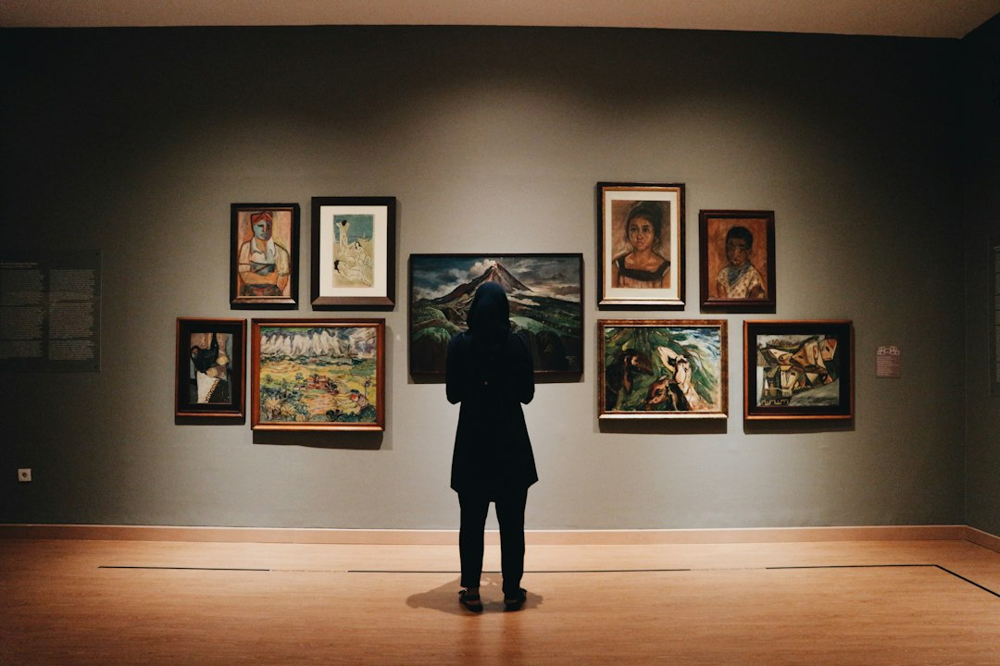

The ThemeScheme website, found at https://moa.ubc.ca/theme-schemes, will feature a homepage with general information about The Museum of Anthropology and the ThemeScheme project. The website will offer four subpages for the following grade levels: K-2, 3-5, 6-8, and 9-12. Within these pages, users will have the chance to pick whether they would like a 60-minute or a 120-minute experience. Each ThemeScheme will feature 10-20 objects with their locations and short descriptions. Users can use the website or can print out hard copies of the guided walks. Students in grade 6 or above will be able to use the website if they are permitted to use or have access to mobile technologies. Students younger than grade 5 will likely need help accessing the website and navigating the museum with adult supervision.